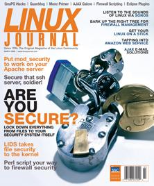

Shutdown Archive web server
Search:
Linux Journal
Issue #143/March 2006

Features
Getting Started with mod_security
by Mick Bauer
What's the mod way of securing your Apache-driven Web site?
GnuPG Hacks
by Tony Stieber
What can GnuPG do for you besides encrypt and decrypt e-mail?
Demons Seeking Dæmons—A Practical Approach to Hardening Your OpenSSH Configuration
by Phil Moses
Don't wait until you have to exorcise a dæmon seeking to possess your SSH server.
Generating Firewall Rules with Perl
by Mike Diehl
A Perl alternative to those tired of tweaking firewall rules by hand.
Getting Started with the Linux Intrusion Detection System
by Irfan Habib
Put a LID on unwanted file access the kernel way.
Indepth
Single Sign-On and the Corporate Directory, Part IV
by Ti Leggett
Wrap up your single sign-on system with CUPS, SSH and firewall rules.
Tough on Grease but Easy on Web Servers
by Kevin Bedell
Ajax expert Ben Galbraith chats about Asynchronous Java and XML.
Rapid GNOME Development with Mono
by Robert Love
If you're itching to try Mono here's where to start.
Stealth E-mail to the Rescue
by Peter Ziobrzynski
A sneaky way to get to your personal e-mail server from work.
Subversion: Not Just for Code Anymore
by William Nagel
Never lose track of your constantly changing personal information again.
Developing Eclipse Plugins
by Mike McCullough
Don't let your development habits be eclipsed by missing features others haven't yet added to this extensible IDE.
Columns
At the Forge
Amazon Web Services
by Reuven M. Lerner
Cooking with Linux
The Best Security...Barks!
by Marcel Gagné
Work the Shell
Writing a Shell Game
by Dave Taylor
Linux for Suits
The Sound of Linux
by Doc Searls
etc/rant/
Separation of Church and Choice
by Nicholas Petreley
Reviews
Let Your Finger Do the Booting
by James Turner
Battle of the Ajax Mail Packages
by James Turner
Departments
Letters
UPFRONT
New Products
Archive Index
Shutdown Archive web server
Search:
Copyright © 1994 - 2018
Linux Journal
. All rights reserved.